埼玉
歴史
- 先史
- 3万年前：旧石器時代、局部磨製石斧（藤久保東第二遺跡、末野遺跡）
- 1万年前：縄文時代早期、竪穴住居（宮林遺跡、打越遺跡）
- 5000年前：縄文時代前期、貝塚（関山貝塚、水子貝塚）
- 紀元前300年：弥生時代前期、弥生文化（四十坂遺跡、白幡中学校内遺跡）
- 4世紀：古墳時代、古墳造営（鷲山古墳、熊野神社古墳）
- 471年：金錯銘鉄剣（稲荷山古墳）
- 6世紀：大型前方後円墳（埼玉古墳群、野本将軍塚古墳）
- 534年：武蔵国造の乱（笠原直使主が同族の小杵と争う）
- 古代
- 684年：百済人23人を武蔵国に移す
- 687年：新羅人22人を武蔵国に移す
- 690年：新羅人12人を武蔵国に移す
- 708年：秩父郡で自然銅が発見され、朝廷に献上
- 716年：関東周辺7か国の高句麗人1799人が武蔵国に移され、高麗群が置かれる
- 758年：新羅人74人を武蔵国に移し、新羅群が置かれる
- 760年：新羅人131人を武蔵国に移す
- 1083年：後三年の役、坂東武者は源義家に従う
- 1156年：保元の乱、斎藤実盛,庄家長,岡部忠澄,金子家忠らが源頼朝に属して戦う
- 1159年：平治の乱、猪俣範綱,熊谷直実,足立遠元らが源頼朝に属して戦う
- 1180年：8月畠山重忠,河越重頼らが平家方として源方の相模国衣笠城を攻めるも、10月源頼朝に帰順する
- 中世
- 武蔵国（の一部）
- 1203年：比企能員、執権北条氏に誅される
- 1205年：畠山重忠父子、北条時政に謀殺される
- 1221年：承久の乱、北条泰時、武蔵武士らを率いて京へ出発
- 1368年：武蔵国平一揆。武蔵国で関東管領の上杉憲顕に対する反乱
- 1416年：上杉禅秀の乱、前関東管領の上杉禅秀が鎌倉公方に反乱
- 1438年：永享の乱、室町幕府が鎌倉公方の討伐を命じる
- 1454年：享徳の乱、室町将軍家,山内上杉氏,扇谷上杉氏が、鎌倉公方と争う
- 1476年：長尾景春の乱、関東管領上杉氏の家臣長尾景春の反乱
- 1478年：扇谷上杉氏の家宰太田道灌、長尾景春の鉢形城を攻略
- 1488年：長亭の乱、山内上杉氏と扇谷上杉氏が争う
- 1524年：北条氏綱、上杉朝興の江戸城を攻略
- 1537年：北条氏綱、上杉朝興の河越城を攻略
- 1546年：河越夜戦、上杉朝定、討死
- 1569年：後北条氏、上杉謙信と和睦（越相同盟）。鉢形城が武田信玄に攻められる
- 1582年：本能寺の変後、後北条氏が織田家の滝川一益と神流川（武蔵国加美郡周辺）で戦う
- 1590年：小田原征伐、後北条氏が豊臣秀吉に降伏、忍城も開城
- 1594年：会の川の締め切り（利根川東遷事情の開始）
- 1602年：中山道に伝馬制を敷く
- 江戸時代（1603年～1868年）
- 川越藩、忍藩、岩槻藩（岩槻城址公園）
- 1604年：諸道に一里塚が設置される、伊奈忠次が備前渠（備前堀）を開削
- 1621年：伊奈忠治、赤堀川を開削
- 1639年：松平信綱が川越藩主となる
- 1643年：川越城下の整備が始まる
- 1654年：玉川上水が完成し江戸市中へ通水を開始
- 1655年：川越藩が野火止用水を開削
- 1694年：中山道沿いの宿場に大助郷の村々を指定
- 1727年：見沼溜井を開発
- 1731年：見沼通船堀が完成
- 1732年：関東一円で大凶作、米価の暴騰
- 1742年：利根川・荒川水系、大洪水
- 1752年：忍藩秩父領で年貢増に反対する一揆が発生
- 1764年：中山道伝馬騒動
- 1772年：平賀源内が秩父郡中津川での鉄山開発を出願
- 1783年：浅間山大噴火の影響で降灰被害
- 1787年：岩槻町で打ち壊し発生
- 1810年：「新編武蔵国風土記」の編纂が始まる
- 1827年：川越藩、藩校（博喩堂）を開設
- 1866年：武州一揆
- 明治時代（1868年～1912年）
- 1871年：埼玉県と入間県を設置、浦和に埼玉県庁を開く
- 1873年：入間県と群馬県を廃して熊谷県を設置
- 1876年：熊谷県の旧武蔵国分（元入間県）を埼玉県に合併（ほぼ今の県域になる）
- 1883年：日本鉄道[上野-熊谷]
- 1884年：秩父事件
- 1885年：日本鉄道[大宮-宇都宮]（利根川渡船連絡）
- 1886年：利根川橋梁、鉄道[大宮-宇都宮]直通
- 1887年：深谷に日本煉瓦製造、吉見百穴発掘調査 、熊谷町の工作による県庁移転問題が勃発
- 1890年：小川町に八百幸商店（ヤオコー）、春日部に島忠箪笥店（島忠）
- 1894年：日本鉄道大宮工場
- 1895年：川越鉄道[国分寺-川越]
- 1896年：熊谷測候所
- 1898年：上武鉄道株式会社（現秩父鉄道）設立
- 1899年：東武鉄道伊勢崎線[北千住-久喜]
- 1901年：上武鉄道[熊谷-寄居]、片倉組（片倉製糸紡績会社）の工場が東京千駄ヶ谷から大宮町に移転
- 1902年：川口町電話所
- 1904年：浦和川越に電灯
- 1910年：利根川・荒川筋堤防が決壊し水害が発生（死者324人）
- 1911年：所沢陸軍飛行場
- 大正時代（1912年～1926年）
- 1914年：東上鉄道[池袋-川越]、上武鉄道[長瀞-秩父]
- 1915年：武蔵野鉄道[池袋-飯能]
- 1917年：狭山茶が全国製茶品評会で第1位
- 1920年：第1回国勢調査県人口1,319,533人、熊谷工業試験場
- 1921年：官立浦和高等学校（現埼玉大学）
- 1922年：川越市
- 1923年：秩父セメント、本庄事件、小川町に島村呉服店（しまむら）、関東大震災発生（埼玉県死者217人）
- 1924年：武州鉄道[蓮田-岩槻]
- 昭和時代（1926年～1989年）
- 1927年：日本無線電信・福岡受信所
- 1929年：北総鉄道[大宮-粕壁]
- 1931年：深谷に広瀬屋商店（赤城乳業）
- 1932年：県立川口鋳物工業試験場、京浜東北線[赤羽-大宮]電化
- 1933年：斎藤実首相らの暗殺を狙った救国埼玉青年挺身隊事件発生、未遂に終わる
- 1934年：山口貯水池（狭山湖）、与野に日本赤十字社埼玉支部療院、八高線全線開通
- 1935年：小川町に県立製紙研究所、熊谷陸軍飛行学校、所沢に手打ちうどん専門店（山田うどん）
- 1937年：熊谷に県立繭検定所、東京放送局川口鳩ケ谷放送所
- 1938年：入間に陸軍航空士官学校
- 1940年：大宮公園県営陸上競技場、川越線[大宮-高麗川]、戸田漕艇場
- 1941年：陸軍予科士官学校が市ヶ谷から朝霞町に移転（りっくんランド）
- 1943年：県内4銀行が合併し埼玉銀行が開業
- 1945年：熊谷大空襲、北浦和に魚悦商店（マルエツ）
- 1946年：蕨町で成年式（初の成人式）
- 1947年：カスリーン台風利根川荒川決壊
- 1948年：大宮と浦和が県庁移転を巡って対立
- 1949年：国立埼玉大学（旧制浦和高校・埼玉師範・埼玉青年師範）、浦和高校サッカー国体優勝
- 1950年：県庁浦和建設決定
- 1952年：高崎線電化、行田に十万石ふくさや
- 1955年：県庁本庁舎
- 1956年：高崎線[大宮-高崎]電車
- 1958年：東北本線[大宮-宇都宮]電化
- 1959年：秩父にスーパー（ベルク）、東松山に八百清（マミーマート）
- 1960年：大宮吉野原工業団地
- 1962年：地下鉄北越谷乗り入れ
- 1963年：蕨に焼肉店安楽亭
- 1964年：武蔵水路（翌年利根川と荒川を結び完成）、所沢に満州里（ぎょうざの満州）
- 1965年：県歌、県民の鳥[シラコバト]、県人口300万人
- 1966年：県の木[ケヤキ]
- 1968年：県庁に電子計算機導入、大宮工業高校選抜高校野球優勝、武道館
- 1969年：西武鉄道秩父線[飯能-秩父]、新大宮バイパス[笹目橋-大宮]
- 1970年：川口市30万人、川口・戸田で光化学スモッグ被害
- 1971年：米軍所沢基地一部返還、県人口400万人、上尾さいたま水上公園、県民の日、県の花[サクラソウ]、関越自動車道[東京-川越]
- 1972年：東北自動車道[岩槻-宇都宮]、熊谷にるーぱん、与野にドイト
- 1973年：武蔵野線[府中本町-南浦和-新松戸]、上尾事件（国鉄ストライキに対する市民暴動）、米軍キャンプ朝霞南地区返還、米軍ジョンソン基地住宅地区返還、ロヂャース浦和店、大宮に来々軒（日高屋）、狭山にファミリーマート
- 1974年：滑川町に武蔵丘陵森林公園
- 1976年：草加にほっかほっか亭
- 1977年：県人口500万人
- 1978年：埼玉古墳群の稲荷山古墳出土鉄剣から金象嵌文字、所沢に西武ライオンズ
- 1980年：東松山市に県こども動物自然公園
- 1982年：東北新幹線大宮始発、北浦和公園に県立近代美術館、見沼通船堀国史跡指定、上越新幹線
- 1983年：芝川洪水防止用見沼第7調整池、稲荷山古墳出土品国宝指定、羽生に県営さいたま水族館
- 1984年：県議会でダサイタマが話題
- 1985年：東北・上越新幹線上野乗り入れ、埼京線[大宮-池袋]、川越線電化
- 1987年：県人口600万人、鴻巣市に運転免許センター、東武東上線地下鉄有楽町線相互乗り入れ、東北道首都高接続、埼玉栄高校全国高校駅伝優勝、寄居町に元禄寿司（がってん寿司）
- 1988年：さいたま博覧会が熊谷市で開催、大宮にパスポートセンター・ソニックシティ
- 平成時代（1989年～2019年）
- 1989年：世界盆栽展（大宮盆栽美術館）
- 1990年：埼玉新都市交通伊奈線（ニューシャトル）全線開通
- 1991年：熊谷工業高校全国高校ラグビー優勝、長瀞トンネル開通（長瀞）
- 1992年：クレヨンしんちゃん、県愛称[彩の国]、東京外郭環状道路[三郷-和光]
- 1993年：所沢航空発祥記念館、駒場競技場で初のJリーグ公式戦、春日部にパソコンショップ（マウスコンピュータ）
- 1994年：与野に彩の国さいたま芸術劇場（与野公園）
- 1996年：圏央道[鶴ヶ島-青梅]、見沼に大川ホームセンター（スーパーバリュー）
- 1997年：飯能にあけぼの子どもの森公園、蕨にキャンドゥ1号店
- 2000年：さいたま新都心駅（さいたま新都心）、さいたまスーパーアリーナ
- 2001年：浦和市・大宮市・与野市合併でさいたま市誕生、埼玉高速鉄道[赤羽岩淵-浦和美園]、埼玉スタジアム
- 2002年：埼玉スタジアムFIFAワールドカップ4試合、県人口700万人
- 2003年：さいたま市が政令指定都市、SKIPシティ
- 2005年：岩槻市がさいたま市に合併、ふじみ野市、県マスコット[コバトン]
- 2006年：春日部市に首都圏外郭放水路（全区間完成）
- 2007年：大宮に鉄道博物館、ララガーデン春日部
- 2008年：越谷レイクタウン、モラージュ菖蒲、圏央道[鶴ヶ島JCT-川島IC]
- 2010年：ららぽーと新三郷、圏央道[川島IC-桶川北本IC]
- 2011年：鳩ケ谷市が川口市に合併
- 2013年：越谷で竜巻被害
- 2016年：埼玉高速鉄道黒字化、和光の理化学研究所で元素ニホニウム
- 2017年：花咲徳栄高校夏の甲子園優勝
- 2018年：熊谷41.1度
- 2019年：映画[翔んで埼玉]（春日部みどりスーパー）、飯能ムーミンバレーパーク
- 令和時代（2019年～）
- 2020年：ところざわサクラタウン
- 2021年：エスカレーター条例
リンク（外部サイト）
参考資料
- 地図で楽しむすごい埼玉（2018年、都道府県研究会）洋泉社
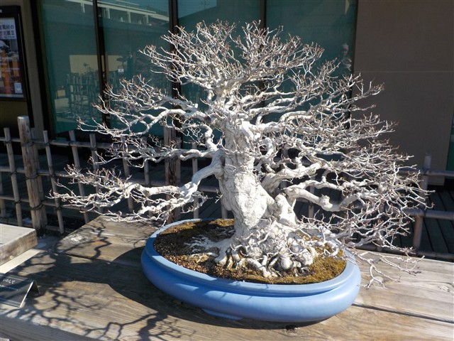
大宮盆栽美術館
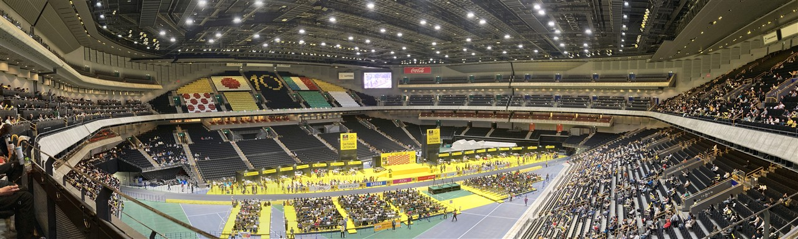
さいたまスーパーアリーナ
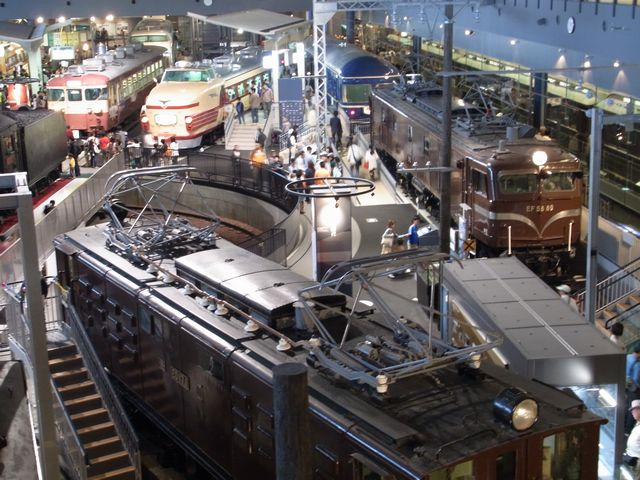
鉄道博物館
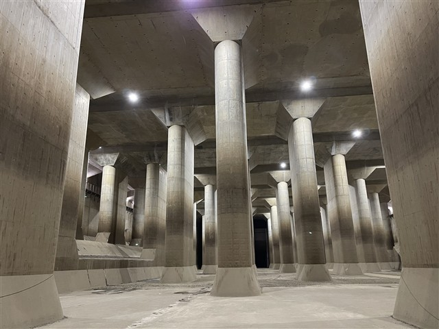
首都圏外郭放水路
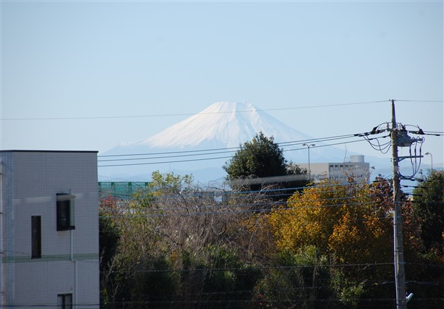
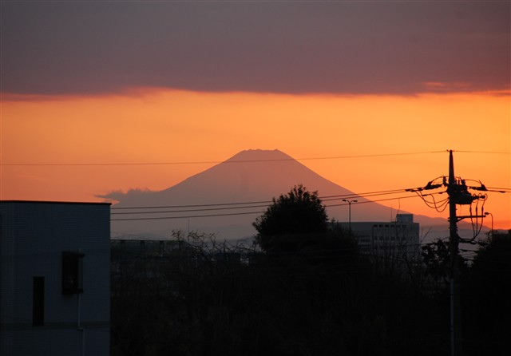
埼京線から見た富士山
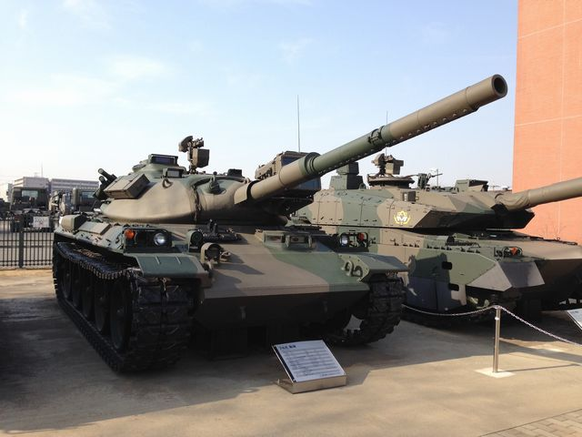
りっくんランド
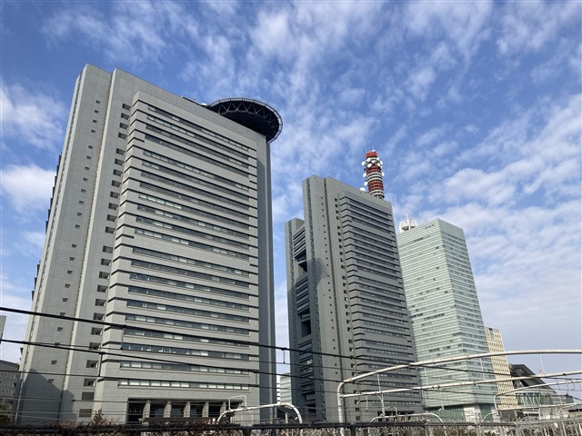
さいたま新都心
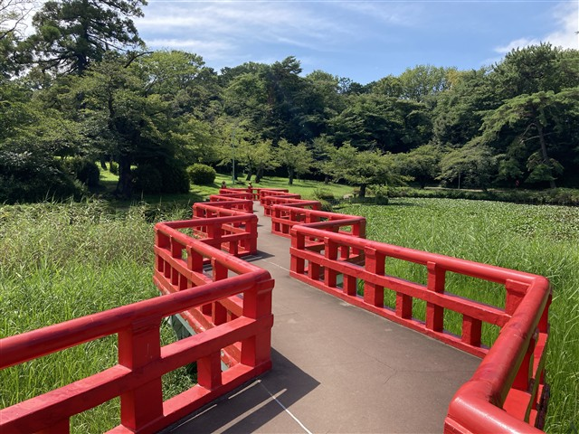
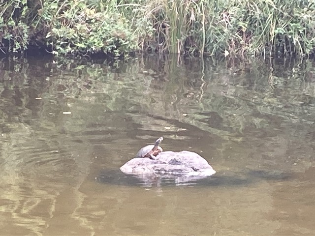
岩槻城址公園
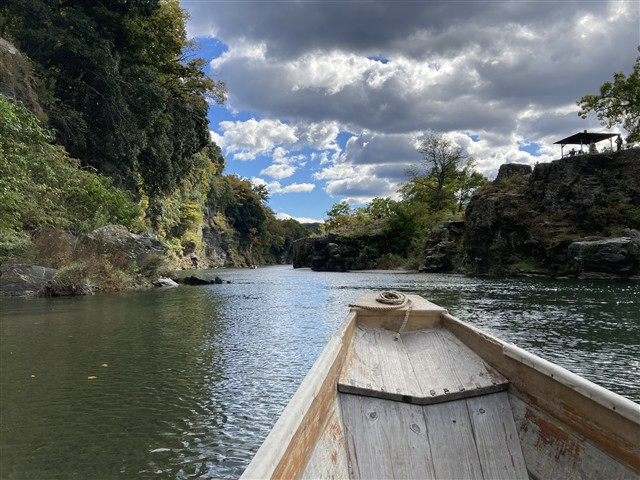
長瀞
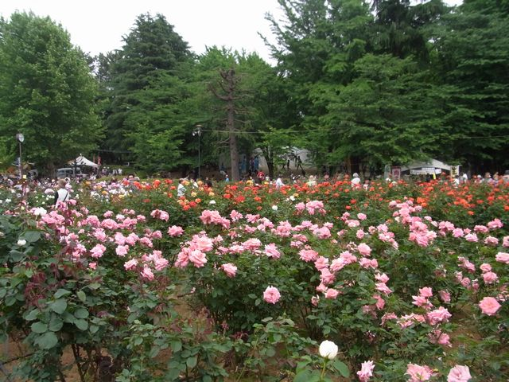
与野公園
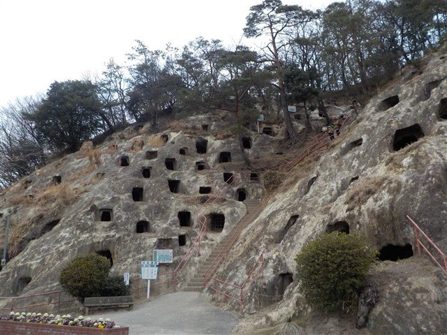
吉見百穴
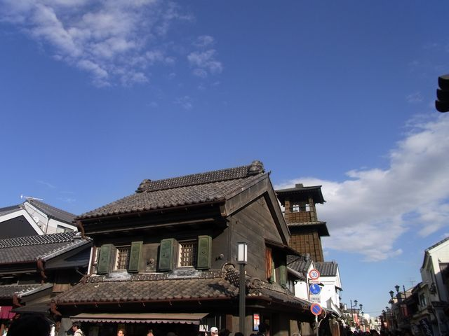
川越
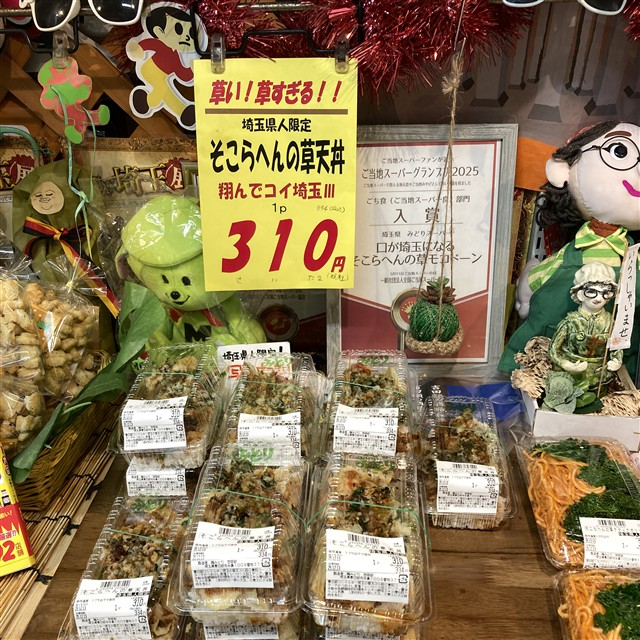
春日部みどりスーパー
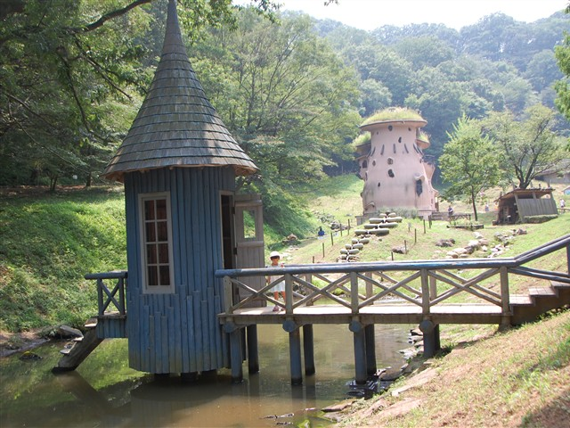
飯能 トーベ・ヤンソンあけぼの子どもの森公園
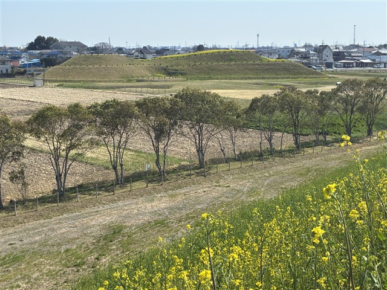
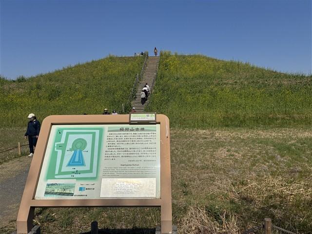
さきたま古墳群